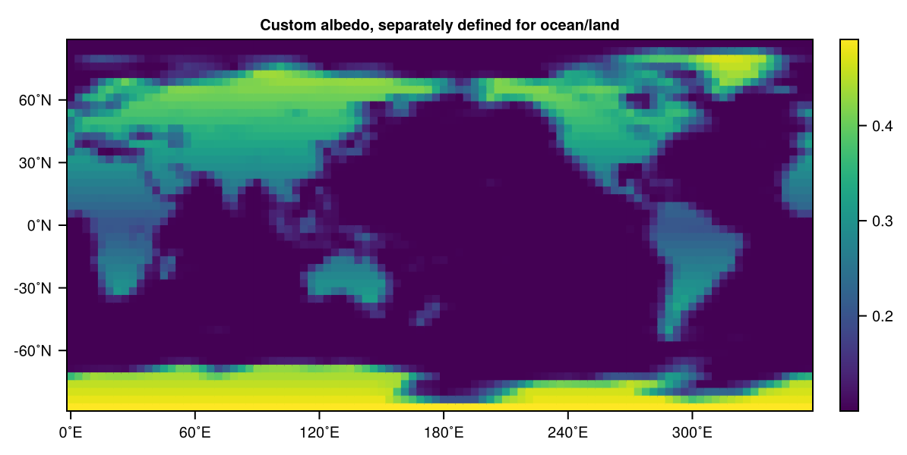

Land surface model
The land surface in SpeedyWeather is represented through several components each of which can be changed in a modular way.
- The actual LandModel or DryLandModel describing the equations for soil temperature and soil moisture, and vegetation or rivers.
- The land-sea mask
- The surface Albedo
- The Orography
As these components are largely independent of another, it is possible to have a white (albedo high) ocean at the top of Mt Everest, or to paint the Sahara black and moving it below sea-level. The first one of these bullet points is discussed below for the others see the respective sections.
Dry vs wet land
The type hierarchy of theactual land surface model is defined as
using SpeedyWeather
subtypes(SpeedyWeather.AbstractLand)2-element Vector{Any}:
SpeedyWeather.AbstractDryLand
SpeedyWeather.AbstractWetLandSo that a dry land does not have moisture whether the atmosphere is a PrimitiveWetModel (with humidity so it can rain) or a PrimitiveDryModel (without humidity). In contrast a wet land does have some soil moisture (which can be zero) and in combination with a PrimitiveWetModel will increase with precipitation for example. You can combine dry and wet land and dry and wet atmosphere freely.
LandModel
The default LandModel in SpeedyWeather contains (at the moment other than 2 soil layers are not supported or experimental)
spectral_grid = SpectralGrid(trunc=31, nlayers=8, nlayers_soil=2)
land = LandModel(spectral_grid)LandModel <: SpeedyWeather.AbstractWetLand
├ spectral_grid: SpectralGrid{Spectrum{SpeedyWeather.LowerTriangularArrays.CPU, Vector{UnitRange{Int64}}, Vector{Int64}, Vector{Int64}}}
├ geometry: LandGeometry{Float32, Vector{Float32}}
├ thermodynamics: LandThermodynamics{Float32}
├ temperature: SeasonalLandTemperature{Float32, OctahedralGaussianArray{Float32, 2, Matrix{Float32}}}
├ soil_moisture: SeasonalSoilMoisture{Float32, OctahedralGaussianArray{Float32, 3, Array{Float32, 3}}}
├ vegetation: VegetationClimatology{Float32, OctahedralGaussianGrid{Float32}}
└ rivers: NoRiversWith land.geometry currently used to define the layer thickness
land.geometry2-layer LandGeometry{Float32, Vector{Float32}}
└ layer_thickness: Float32[0.1, 4.0]And land.thermodynamics used to define thermodynamics-relevant surface properties as conceptual "constants" used in the other components of the land surface model land.
land.thermodynamicsLandThermodynamics{Float32} <: SpeedyWeather.AbstractLandThermodynamics
├ heat_conductivity::Float32 = 0.42
├ field_capacity::Float32 = 0.24
├ heat_capacity_water::Float32 = 4.2e6
├ heat_capacity_dry_soil::Float32 = 1.13e6
├ W_cap::Float32 = 0.3
└ W_wilt::Float32 = 0.17To change these you can either mutate the fields
land.thermodynamics.heat_conductivity = 0.250.25or create a new model component thermodynamics passed on to the land model constructor
thermodynamics = LandThermodynamics(spectral_grid, heat_conductivity=0.25)
land = LandModel(spectral_grid; thermodynamics)
land.thermodynamicsLandThermodynamics{Float32} <: SpeedyWeather.AbstractLandThermodynamics
├ heat_conductivity::Float32 = 0.25
├ field_capacity::Float32 = 0.24
├ heat_capacity_water::Float32 = 4.2e6
├ heat_capacity_dry_soil::Float32 = 1.13e6
├ W_cap::Float32 = 0.3
└ W_wilt::Float32 = 0.17(note that ; thermodynamics is a Julia shortcut instead of thermodynamics=thermodynamics we often use matching keyword arguments by their name). Similarly you can change land.geometry which however is not mutable.
Generally, a LandModel or DryLandModel is similarly constructed to a PrimitiveWetModel or PrimitiveDryModel. One starts by defining its non-default components, always passes on the spectral grid as the first argument, and then constructs the actual land model by passing on those components. Finally, we use that land model to construct the atmospheric model
model = PrimitiveWetModel(spectral_grid; land)
model.landLandModel <: SpeedyWeather.AbstractWetLand
├ spectral_grid: SpectralGrid{Spectrum{SpeedyWeather.LowerTriangularArrays.CPU, Vector{UnitRange{Int64}}, Vector{Int64}, Vector{Int64}}}
├ geometry: LandGeometry{Float32, Vector{Float32}}
├ thermodynamics: LandThermodynamics{Float32}
├ temperature: SeasonalLandTemperature{Float32, OctahedralGaussianArray{Float32, 2, Matrix{Float32}}}
├ soil_moisture: SeasonalSoilMoisture{Float32, OctahedralGaussianArray{Float32, 3, Array{Float32, 3}}}
├ vegetation: VegetationClimatology{Float32, OctahedralGaussianGrid{Float32}}
└ rivers: NoRiversis now the land defined above used when integrating a SpeedyWeather model.
DryLandModel
Alternatively, one can use the DryLandModel to explicitly disable any functionality around soil moisture. By doing so, soil moisture will always be zero, or treated like zero skipping unnecessary computations. It is created in the same way (reusing some non-default thermodynamics from above)
land = DryLandModel(spectral_grid; thermodynamics)DryLandModel <: SpeedyWeather.AbstractDryLand
├ spectral_grid: SpectralGrid{Spectrum{SpeedyWeather.LowerTriangularArrays.CPU, Vector{UnitRange{Int64}}, Vector{Int64}, Vector{Int64}}}
├ geometry: LandGeometry{Float32, Vector{Float32}}
├ thermodynamics: LandThermodynamics{Float32}
└ temperature: SeasonalLandTemperature{Float32, OctahedralGaussianArray{Float32, 2, Matrix{Float32}}}but it does not contain soil moisture, vegetation or rivers in contrast to the LandModel.
Land soil temperature
Currently implemented soil temperatures are
subtypes(SpeedyWeather.AbstractLandTemperature)3-element Vector{Any}:
ConstantLandTemperature
LandBucketTemperature
SeasonalLandTemperatureYou can use them by passing them on to a LandModel/DryLandModel model constructor
temperature = LandBucketTemperature(spectral_grid)
land = LandModel(spectral_grid; temperature)LandModel <: SpeedyWeather.AbstractWetLand
├ spectral_grid: SpectralGrid{Spectrum{SpeedyWeather.LowerTriangularArrays.CPU, Vector{UnitRange{Int64}}, Vector{Int64}, Vector{Int64}}}
├ geometry: LandGeometry{Float32, Vector{Float32}}
├ thermodynamics: LandThermodynamics{Float32}
├ temperature: LandBucketTemperature{Float32}
├ soil_moisture: SeasonalSoilMoisture{Float32, OctahedralGaussianArray{Float32, 3, Array{Float32, 3}}}
├ vegetation: VegetationClimatology{Float32, OctahedralGaussianGrid{Float32}}
└ rivers: NoRiverssuch that
land.temperatureLandBucketTemperature{Float32} <: SpeedyWeather.AbstractLandTemperature
├ initial_temperature::Float32 = 285.0
└ mask::Bool = falseis the LandBucketTemperature just defined. Similarly
land = DryLandModel(spectral_grid; temperature)DryLandModel <: SpeedyWeather.AbstractDryLand
├ spectral_grid: SpectralGrid{Spectrum{SpeedyWeather.LowerTriangularArrays.CPU, Vector{UnitRange{Int64}}, Vector{Int64}, Vector{Int64}}}
├ geometry: LandGeometry{Float32, Vector{Float32}}
├ thermodynamics: LandThermodynamics{Float32}
└ temperature: LandBucketTemperature{Float32}if you do not want the land to hold any moisture, vegetation or rivers.
LandBucketTemperature
LandBucketTemperature is a prognostic model of the soil temperature in the land surface model, interacting two-way with the surface air temperature. It can warm up through radiation and other surface heat fluxes, retain thermal energy and release this back to the atmosphere either in the form of longwave radiative fluxes or sensible heat fluxes (latent heat fluxes depend on soil moisture, see Surface fluxes). It is a bucket model such that interaction between neighbouring grid cells ("buckets") of the land surface only interact through the atmosphere with another, there are no direct horizontal fluxes between cells. In the sense of soil moisture, you can fill a bucket from above with rainfall, it may leak/drain at the bottom but buckets are laterally isolated from another. A similar concept applies to the heat fluxes of the LandBucketTemperature.
The LandBucketTemperature here follows MITgcm's 2-layer model, as defined here. As this is a 2-layer model, SpectralGrid(nlayers_soil=2) is required. The equations are
\[\begin{aligned} \Delta z_1 C_1 \frac{dT_1}{dt} &= F - \lambda\frac{T_1 - T_2}{(\Delta z_1 + \Delta z_2)/2} \\ \Delta z_2 C_2 \frac{dT_2}{dt} &= \lambda\frac{T_1 - T_2}{(\Delta z_1 + \Delta z_2)/2} \end{aligned}\]
for two layers of thicknesses $\Delta z_1 = 0.1~m$ (top) and $\Delta z_2 = 4.0~m$ (layer below) and respective temperatures $T_1, T_2$. The total surface downward heat flux F (in $W/m^2$) forces the surface layer 1, and diffusion scales with the heat conductivity $\lambda = 0.42 W/m/K$ in the opposite direction of the heat gradient between the layers. For the parameter choices here it is typical that the surface layer is dominated by the daily cycle, but the layer below by the seasonal cycle.
The heat capacities $C_1, C_2$ are diagnosed from the heat capacity of water $C_w = 4.2 \times 10^6 J/m^3/K$ and dry soil $C_s = 1.13 \times 10^6 J/m^3/K$ given the soil moistures $W_1, W_2$ (ratio of available water to field capacity) of the respective layers.
\[\begin{aligned} C_1 &= C_w W_1 \gamma + C_s \\ C_2 &= C_w W_2 \gamma + C_s \end{aligned}\]
with $\gamma = 0.24$ being the field capacity per meter soil.
Land soil moisture
Currently implemented soil moistures are
subtypes(SpeedyWeather.AbstractSoilMoisture)3-element Vector{Any}:
LandBucketMoisture
NoSoilMoisture
SeasonalSoilMoistureYou can use them by passing them on to a LandModel (not the DryLandModel though which does not have moisture) model constructor
soil_moisture = LandBucketMoisture(spectral_grid)
land = LandModel(spectral_grid; soil_moisture)LandModel <: SpeedyWeather.AbstractWetLand
├ spectral_grid: SpectralGrid{Spectrum{SpeedyWeather.LowerTriangularArrays.CPU, Vector{UnitRange{Int64}}, Vector{Int64}, Vector{Int64}}}
├ geometry: LandGeometry{Float32, Vector{Float32}}
├ thermodynamics: LandThermodynamics{Float32}
├ temperature: SeasonalLandTemperature{Float32, OctahedralGaussianArray{Float32, 2, Matrix{Float32}}}
├ soil_moisture: LandBucketMoisture{Float32}
├ vegetation: VegetationClimatology{Float32, OctahedralGaussianGrid{Float32}}
└ rivers: NoRiversLandBucketMoisture
LandBucketMoisture defines the prognostic equation for soil moisture in the land surface model. It is a bucket model in the sense that every grid cell can fill like a bucket with rainfall from above dry out by evaporation, can drain into layers below or into a river runoff. But there is generally no lateral transport, only through the atmosphere.
The LandBucketMoisture here follows MITgcm's 2-layer model, as defined here. As this is a 2-layer model, SpectralGrid(nlayers_soil=2) is required. The equations are
\[\begin{aligned} \frac{dW_1}{dt} &= \frac{P - E - R}{f_1} + \frac{W_2 - W_1}{\tau} \\ \frac{dW_2}{dt} &= -\frac{f_1}{f_2}\frac{W_2 - W_1}{\tau} \\ \end{aligned}\]
for soil moistures $W_1, W_2$ in the respective layers (1 top, 2 below) defined as ratio of available water to field capacity, $f_i = \gamma \Delta z_i$ with $\gamma = 0.24$ the field capacity per meter soil and $\Delta z_1 = 0.1~m$ the top layer thickness by default, and $\Delta z_2 = 4.0~m$ the layer below. The top layer is forced by precipitation $P$ minus evaporation $E$ minus river runoff $R$. The second term is a diffusion term of soil moisture between the two layers, acting on a time scale of $\tau = 2~$days.
At the moment (and generally if not coupled to an ocean model) the river runoff lets water disappear. $W_1, W_2$ are bounded by $[0, 1]$ so that if more precipitation $P$ (or in combination with negative evaporation $E$, meaning condensation) occurs than the land can hold we compute the excess water as $\delta W_1 = W_1 - 1$, set the soil moisture $W_1 = 1$ back to the maximum and add a fraction $p = 0.5$ of that excess water to the layer below $W_2 = W_2 + p \delta W_1 \tfrac{f_1}{f_2}$ the other half of that excess water is put into the river runoff.
Albedo
Albedo is the surface reflectivity to downward solar shortwave radiation. A value of 1 indicates that all of the radiative flux is reflected at the Earth's surface and sent back up through the atmospheric column. In contrast, a value of 0 means no reflection and all of that radiative flux is absorbed, typically heating ocean or land surface. The following albedo's are currently implemented
subtypes(SpeedyWeather.AbstractAlbedo)4-element Vector{Any}:
Albedo
AlbedoClimatology
GlobalConstantAlbedo
ManualAlbedoAlbedo is generally a 2D global diagnostic variable for ocean and land separately. Meaning it is possible it define albedo as a constant in time but also to let it be diagnosed as a function of other variables on every time step (e.g. snow cover). However, this specifically is currently not implemented. In general you have to think of the albedo not as a boundary condition that is set once but reset on every time step. This is so that, e.g. snow cover can increase the albedo without losing the information of the underlying bare surface albedo. If you do want to set the albedo manually with set! then use ManualAlbedo which has it's own albedo 2D field that is copied into the diagnostic variables on every time step. See example below. AlbedoClimatology does the same but ManualAlbedo does not need to read an albedo from file at initialization.
Albedo itself is a container for separate albedo's for ocean and land as averaging those in grid cells which are partially land, partially ocean will yield inaccurate results. Think 10% land having a lower heat capacity than land but being treated with an albedo that comes from 90% ocean. Not very realistic. The default albedo can be created with
albedo = DefaultAlbedo(spectral_grid)Albedo <: SpeedyWeather.AbstractAlbedo
├ ocean: GlobalConstantAlbedo{Float32}
└ land: GlobalConstantAlbedo{Float32}and inspected with
albedo.oceanGlobalConstantAlbedo{Float32} <: SpeedyWeather.AbstractAlbedo
└ albedo::Float32 = 0.06etc. You can mix those albedos too, they are internally two independent fields that are applied to fluxes separately, e.g.
albedo = Albedo(GlobalConstantAlbedo(spectral_grid), AlbedoClimatology(spectral_grid))Albedo <: SpeedyWeather.AbstractAlbedo
├ ocean: GlobalConstantAlbedo{Float32}
└ land: AlbedoClimatology{Float32, OctahedralGaussianGrid{Float32}}constructs an albedo that is a global constant (default 0.3) for the ocean but the AlbedoClimatology read from file used for the land. The first argument for Albedo is used for ocean the second for land but you can use keywords too.
Alternatively you can also drop the separation into ocean/land albedo (e.g. idealised simulations or aqua planet, rocky planet). And just use
albedo = GlobalConstantAlbedo(spectral_grid)GlobalConstantAlbedo{Float32} <: SpeedyWeather.AbstractAlbedo
└ albedo::Float32 = 0.3and this definition of the albedo will be used for both ocean and land fluxes. In all cases you can then pass on the albedo to the model constructor, e.g.
albedo = Albedo(GlobalConstantAlbedo(spectral_grid, albedo=0.1), ManualAlbedo(spectral_grid))
set!(albedo.land, (λ, φ) -> 0.2 + 0.3*abs(φ)/90)
model = PrimitiveWetModel(spectral_grid; albedo)
model.albedoAlbedo <: SpeedyWeather.AbstractAlbedo
├ ocean: GlobalConstantAlbedo{Float32}
└ land: ManualAlbedo{Float32, OctahedralGaussianGrid{Float32}}The albedo in the model is now the one defined just in the lines above, using a globally constant albedo of 0.1 for the ocean but a higher albedo over land which also increases to 0.5 towards the poles.
You can always output the land-sea mask weighted albedo with add!(model, SpeedyWeather.AlbedoOutput()) or inspect it as follows
simulation = initialize!(model)
run!(simulation, steps=1) # run for a step to "diagnose" albedo = ocean/land weighted
using CairoMakie
(; albedo) = simulation.diagnostic_variables.physics
heatmap(albedo, title="Custom albedo, separately defined for ocean/land")